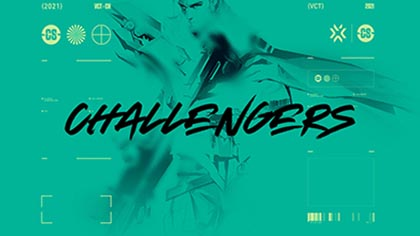
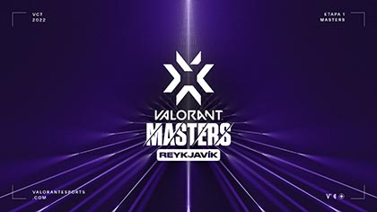
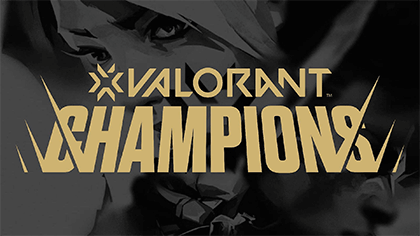
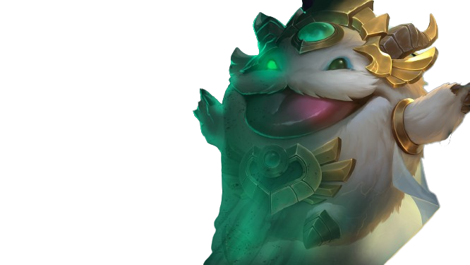

E-Sports
Riot Games también es conocida por su compromiso con los deportes electrónicos (e-sports). La compañía ha organizado varios torneos importantes de e-sports en todo el mundo, y cuenta con una gran cantidad de jugadores profesionales y equipos en sus juegos.
League of Legends
El Campeonato mundial de League of Legends (en inglés, League of Legends World Championship), también conocido como Worlds, es un torneo anual de League of Legends organizado por Riot Games y que supone la culminación de cada temporada. Los equipos compiten por el título de campeón, la Copa del Invocador, y un premio de varios miles de dólares. El torneo ha sido ampliamente elogiado por sus actuaciones ceremoniales, además de recibir una alta atención mediática debido a su naturaleza emocional y dramática. Las finales de 2018 fueron vistas por 99.6 millones de personas, rompiendo el récord de la edición anterior.
Valorant
Valorant se ha vuelto activo dentro de esports. Riot Games decidió crear el primer torneo llamado "First Strike" para establecer una base para crear una escena de deportes electrónicos con el juego.
En noviembre de 2020, Riot Games anunció la serie de torneos llamada Valorant Champions Tour (VCT), que es una competencia de un año que consta de tres niveles:
- Challengers: torneos regionales que se llevan a cabo en todo el mundo. 
- Masters: torneos internacionales que se llevan a cabo en todo el mundo. 
- Champions: un torneo internacional que se llevará a cabo en diciembre de 2021. 
Los equipos se clasificarán directamente para los Champions a través de los primeros lugares en la Clasificación de Puntos del Circuito de su región, según los resultados de los Challengers y Masters. Los equipos que se encuentren en los puestos intermedios de la Clasificación por Puntos del Circuito tendrán una oportunidad más de clasificarse para Campeones al ganar los Clasificatorios de Última Oportunidad (América del Norte, EMEA, América del Sur, Asia Pacífico).
Valorant Champions 2022 se celebró del 31 de agosto al 18 de septiembre en Estambul.
LOUD derrotó a OpTic Gaming por 3-1 en la final y se convirtió en el segundo campeón mundial de esports "Valorant".
¡Hola! Soy un Poro medio corrompido y estoy aquí para guiarte en tu aventura. ¡Si quieres sumergirte en la sección de entretenimiento Haz Click en mi imagen!. Descubrirás todo lo que necesitas saber sobre cómics, música y series de animación. ¡Vamos, aventurero! ¡Descubre lo mejor del entretenimiento en esta sección! ¡No te arrepentirás!
